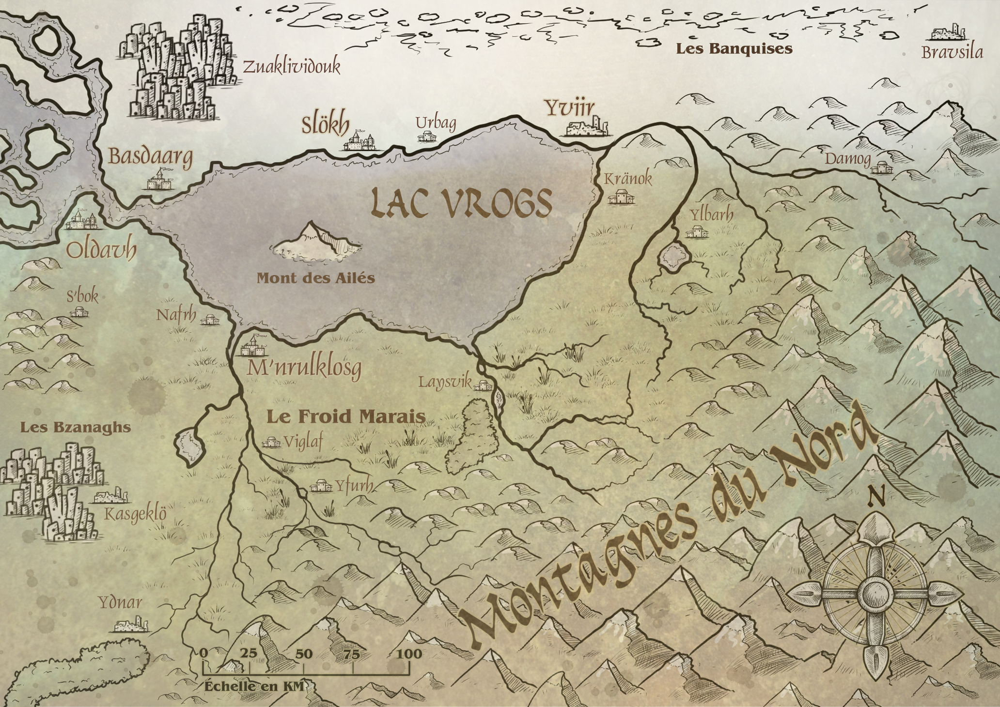

Personnages:
- Kiilash:
- Kiilash fait partie de la tribu des Kiilza'har, une tribune d'homme hiboux blanc qui vit en Hermite dans les fin fonds d'une forêt sur des cabanes en hauteur qu'ils atteignent grâce à leurs ailes. Cette tribu était des chasseurs cueilleurs pêcheurs qui pouvaient utiliser une sorte de foudre violette conférée par leur dieu. Cette tribu fut malheureusement décimé par les mégapoles pour une raison inconnue
- Kiilash va alors décider de tenter d'intégrer une mégapole pour comprendre la raison qui les a poussé à commettre cet acte abominable
- Kiilash était un des rares de sa tribu considéré comme en phase avec leur dieu Kiilza'har ce qui lui confère une maîtrise excellente dans la maîtrise de la foudre violette.
- Ingénieux, il est capable de faire preuve d'une visualisation de tout ce qui l'entoure pour prélever les bonnes pièces a la confection d'objets utiles
- Kiilash possède des infusions miraculeuse qui permettent de décupler certaine capacité
- Tupaï-Tupaï:
- Tupaï-Tupaï est un écureuil volant de 1m de haut et de large. Ce dernier vis dans une forêt ou étrangement la plupart des être vivants sont pourvu de la parole. Tupaï-Tupaï se débrouille seul a confectionner toute sorte de pièges de gadgets et plein d'autre choses pour chasser les ennemis les plus puissants de sa forêt. Il a dailleur réussi à chasser le plus puissant être de sa forêt le Naga Mencuci.
- Après avoir battu l'ennemi le plus puissant Tupaï-Tupaï apprend l'existence des mégapole et décide de s'y rendre pour rencontrer des ennemis encore plus puissant
- il est capable de lancer de nombreux projectil, sa bat avec des dagues
- Ingénieux, il est capable de faire preuve d'une visualisation de tout ce qui l'entoure pour prélever les bonnes pièces a la confection d'objets utiles
- il possède toutes sorte de projectiles des bombes des flèches des dagues et plein de matériau
Dans le territoire de la crevasse hurlante, toutes les ressources sont concentrées au seins des mégapoles. Ces mégapoles n'acceptent que les plus puissants guerriers, guerrier qui pour les intégrer devront passer une série d'épreuves toutes plus dures les unes que les autres. Les mégapoles sont érigées sur plusieurs étage et chaque étages est plus prestigieux que celui qui le précède. Ainsi plus un résident d'une mégapole peut accéder à un étage élevé, plus ce dernier est puissant et peut profiter d'un mode de vie luxueux. Cependant, hors des mégapoles, il n'y a plus rien, plus aucune ressource, plus aucune source de nourriture, mais énormément de personnes vivants dans la misère. Ainsi énormément de personnes vivantes dans le no man's land vont tenter de passer les épreuves pour intégrer une mégapole mais la plupart de ces personnes y périssent. Un jour, pour des raisons diverses et variées, un groupe de survivants vont passer les épreuves préliminaires d'intégration des mégapoles et vont tenter d'arriver à bout des épreuves suivantes qui séparent leur monde de misère à la vie luxueuse
